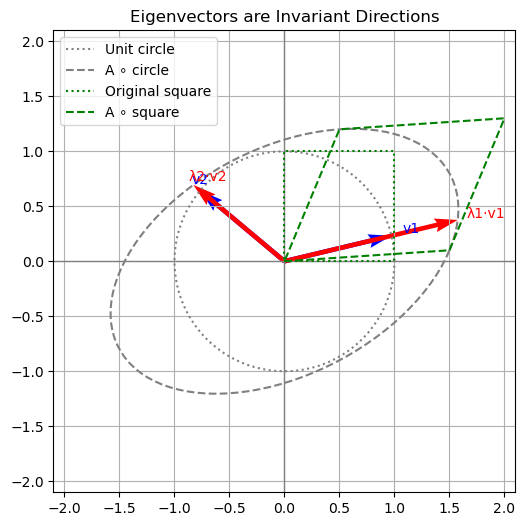

Eigenvalues and Eigenvectors#
For a square matrix \(\mathbf{A} \in \mathbb{R}^{n \times n}\), there may be vectors which, when \(\mathbf{A}\) is applied to them, are simply scaled by some constant.
A nonzero vector \(\mathbf{x} \in \mathbb{C}^n\) is an eigenvector of \(\mathbf{A}\) corresponding to eigenvalue \(\lambda \in \mathbb{C}\) if
The zero vector is excluded from this definition because \(\mathbf{A}\mathbf{0} = \mathbf{0} = \lambda\mathbf{0}\) for every \(\lambda\).
Eigenvalues and eigenvectors can be complex numbers, even if \(\mathbf{A}\) is real-valued. We will provide a high-level discussion of the conditions below.
First, let’s look at an example and how multiplication with a matrix \(\mathbf{A}\) transforms vectors that lie on the unit circle and, in particular, how it changes it’s eivenvectors during multiplication.
Show code cell source
import numpy as np
import matplotlib.pyplot as plt
# --- Base matrix ---
A = np.array([[1.5, 0.5],
[0.1, 1.2]])
# Compute eigenvalues and eigenvectors
eigvals, eigvecs = np.linalg.eig(A)
from IPython.display import display, Markdown
λ1, λ2 = eigvals
display(Markdown(f"The matrix has Eigenvalues λ₁ = {eigvals[0]:.2f}, λ₂ = {eigvals[1]:.2f}."))
square = np.array([[0, 1, 1, 0, 0],
[0, 0, 1, 1, 0]])
transformed_square = A @ square
# Unit circle for reference
theta = np.linspace(0, 2*np.pi, 100)
circle = np.stack((np.cos(theta), np.sin(theta)), axis=0)
# Transformed unit circle
circle_transformed = A @ circle
# Plot settings
fig, ax = plt.subplots(figsize=(6,6))
ax.plot(circle[0], circle[1], ':', color='gray', label='Unit circle')
ax.plot(circle_transformed[0], circle_transformed[1], color='gray', linestyle='--', label='A ∘ circle')
# Plot eigenvectors
for i in range(2):
vec = eigvecs[:, i]
ax.quiver(0, 0, vec[0], vec[1], angles='xy', scale_units='xy', scale=1.0, color='blue', width=0.01)
ax.quiver(0, 0, *(eigvals[i] * vec), angles='xy', scale_units='xy', scale=1.0, color='red', width=0.01)
ax.text(*(1.1 * vec), f"v{i+1}", color='blue')
ax.text(*(1.05 * eigvals[i] * vec), f"λ{i+1}·v{i+1}", color='red')
# Axes
ax.axhline(0, color='gray', lw=1)
ax.axvline(0, color='gray', lw=1)
ax.set_aspect('equal')
ax.set_xlim(-2.1, 2.1)
ax.set_ylim(-2.1, 2.1)
ax.set_title("Eigenvectors are Invariant Directions")
ax.plot(square[0], square[1], 'g:', label='Original square')
ax.plot(transformed_square[0], transformed_square[1], 'g--', label='A ∘ square')
ax.legend()
plt.grid(True)
plt.show()
The matrix has Eigenvalues λ₁ = 1.62, λ₂ = 1.08.
The visualization shows:
The original unit circle (dashed black)
The transformed unit circle under \(\mathbf{A}\) (solid red)
The eigenvectors in blue and their scaled images in green
Note how the eigenvectors are aligned with the directions that remain unchanged in orientation under transformation — they are only scaled by their respective eigenvalues.
Eigenvectors can be real-valued or complex.#
Here’s a breakdown of the geometric distinction between linear maps that have only real eigenvectors and those that have complex eigenvectors:
Real Eigenvectors → Maps That Stretch or Reflect Along Fixed Directions#
If a matrix \(\mathbf{A} \in \mathbb{R}^{n \times n}\) has only real eigenvalues and eigenvectors, it means:
There exist real directions in space that are preserved (up to scaling).
The action of the matrix is intuitively:
Scaling (positive eigenvalues)
Reflection + scaling (negative eigenvalues)
You can visualize this as:
Pulling/stretching space along certain axes
Possibly flipping directions
Complex Eigenvectors → Maps That Rotate or Spiral#
If a matrix has complex eigenvalues and no real eigenvectors, it cannot leave any real direction invariant.
This typically corresponds to:
Rotation or spiral motion
Sometimes rotation + scaling (when complex eigenvalues have modulus \(\ne 1\))
The action in real space:
No real eigenvector
Points are rotated or rotated and scaled
Repeated application creates circular or spiraling trajectories
Example: Stretching vs. Shearing vs. Rotation#
Stretching: scales space differently along the axes. The matrix has only real eigenvalues and eigenvectors.
Shearing: shifts one axis direction while keeping the other fixed. The matrix has only real eigenvalues and eigenvectors.
Rotation: turns everything around the origin. The matrix has only complex eigenvalues and eigenvectors.
Each transformation is applied to a unit square and a grid, so you can clearly see how space is deformed under each linear map.
Show code cell source
import numpy as np
import matplotlib.pyplot as plt
def apply_transform(grid, matrix):
return np.tensordot(matrix, grid, axes=1)
def draw_transform(ax, matrix, title, color='red'):
# Draw original grid
x = np.linspace(-1, 1, 11)
y = np.linspace(-1, 1, 11)
for xi in x:
ax.plot([xi]*len(y), y, color='lightgray', lw=0.5)
for yi in y:
ax.plot(x, [yi]*len(x), color='lightgray', lw=0.5)
# Draw transformed grid
for xi in x:
line = np.stack(([xi]*len(y), y))
transformed = apply_transform(line, matrix)
ax.plot(transformed[0], transformed[1], color=color, lw=1)
for yi in y:
line = np.stack((x, [yi]*len(x)))
transformed = apply_transform(line, matrix)
ax.plot(transformed[0], transformed[1], color=color, lw=1)
# Draw unit square before and after
square = np.array([[0, 1, 1, 0, 0],
[0, 0, 1, 1, 0]])
transformed_square = matrix @ square
ax.plot(square[0], square[1], 'k--', label='Original square')
ax.plot(transformed_square[0], transformed_square[1], 'k-', label='Transformed square')
ax.set_aspect('equal')
ax.set_xlim(-2, 2)
ax.set_ylim(-2, 2)
ax.set_title(title)
ax.legend()
# Define transformation matrices
stretch = np.array([[1.5, 0],
[0, 0.5]])
shear = np.array([[1, 1],
[0, 1]])
theta = np.pi / 4
rotation = np.array([[np.cos(theta), -np.sin(theta)],
[np.sin(theta), np.cos(theta)]])
# Plot all three
fig, axes = plt.subplots(1, 3, figsize=(15, 5))
draw_transform(axes[0], stretch, "Stretching")
draw_transform(axes[1], shear, "Shearing")
draw_transform(axes[2], rotation, "Rotation")
plt.suptitle("Linear Transformations: Stretch vs Shear vs Rotation", fontsize=14)
plt.tight_layout(rect=[0, 0, 1, 0.95])
plt.show()
We now give some useful results about how eigenvalues change after various manipulations.
Proposition (Eigenvalues and Eigenvectors)
Let \(\mathbf{x}\) be an eigenvector of \(\mathbf{A}\) with corresponding eigenvalue \(\lambda\).
Then
(i) For any \(\gamma \in \mathbb{R}\), \(\mathbf{x}\) is an eigenvector of \(\mathbf{A} + \gamma\mathbf{I}\) with eigenvalue \(\lambda + \gamma\).
(ii) If \(\mathbf{A}\) is invertible, then \(\mathbf{x}\) is an eigenvector of \(\mathbf{A}^{-1}\) with eigenvalue \(\lambda^{-1}\).
(iii) \(\mathbf{A}^k\mathbf{x} = \lambda^k\mathbf{x}\) for any \(k \in \mathbb{Z}\) (where \(\mathbf{A}^0 = \mathbf{I}\) by definition).
Below we illustrate the geometric meaning of Propositions (i)–(iii) using the same original matrix \(\mathbf{A}\).
Each subplot shows:
The unit circle (dashed black)
The circle transformed by the original matrix \(\mathbf{A}\) (dotted gray)
The circle transformed by the modified matrix (solid red)
An eigenvector of \(\mathbf{A}\) (blue)
The eigenvector after transformation by the modified matrix (red arrow)
Show code cell source
import numpy as np
import matplotlib.pyplot as plt
def plot_eig_effect(ax, A_original, A_transformed, transformation_label, proposition_label, color_vec='red', color_circle='crimson',):
# Unit circle
theta = np.linspace(0, 2 * np.pi, 200)
circle = np.vstack((np.cos(theta), np.sin(theta)))
circle_A = A_original @ circle
circle_transformed = A_transformed @ circle
# Eigenvectors and values of A_original
eigvals, eigvecs = np.linalg.eig(A_original)
# Plot unit and transformed circles
ax.plot(circle[0], circle[1], 'k--', label='Unit Circle')
ax.plot(circle_A[0], circle_A[1], color='gray', linestyle=':', label='A ∘ Circle')
ax.plot(circle_transformed[0], circle_transformed[1], color=color_circle, label=transformation_label+' ∘ Circle')
for i in range(2):
v = eigvecs[:, i]
v = v / np.linalg.norm(v)
Atrans_v = A_transformed @ v
# Plot eigenvector and its transformed image
ax.quiver(0, 0, v[0], v[1], angles='xy', scale_units='xy', scale=1, color='blue', label=r'Eigenvector $\mathbf{v}$' if i == 0 else None)
ax.quiver(0, 0, Atrans_v[0], Atrans_v[1], angles='xy', scale_units='xy', scale=1, color=color_vec, label=transformation_label+r' ∘ $\mathbf{v}$' if i == 0 else None)
# Formatting
ax.set_xlim(-3, 3)
ax.set_ylim(-3, 3)
ax.set_aspect('equal')
ax.axhline(0, color='gray', lw=0.5)
ax.axvline(0, color='gray', lw=0.5)
ax.set_title(proposition_label + transformation_label)
ax.grid(True)
# --- Base matrix ---
A = np.array([[1.5, 0.5],
[0.1, 1.2]])
# --- Matrix variants ---
gamma = 0.5
A_shifted = A + gamma * np.eye(2)
A_inv = np.linalg.inv(A)
A_sq = A @ A
# --- Plotting ---
fig, axes = plt.subplots(1, 3, figsize=(18, 6))
plot_eig_effect(axes[0], A, A_shifted, "(A + γI)", proposition_label= "i): ")
plot_eig_effect(axes[1], A, A_inv, "A⁻¹", proposition_label= "ii): ")
plot_eig_effect(axes[2], A, A_sq, "A²", proposition_label= "iii): ")
for ax in axes:
ax.legend()
plt.suptitle("Eigenvector Transformations for Proposition (i)–(iii)", fontsize=16)
plt.tight_layout(rect=[0, 0, 1, 0.95])
plt.show()
We observe that:
The eigenvector direction is invariant (it doesn’t rotate)
The scaling changes depending on the transformation:
In (i), \(\mathbf{A} + \gamma \mathbf{I}\) adds \(\gamma\) to the eigenvalue.
In (ii), \(\mathbf{A}^{-1}\) inverts the eigenvalue.
In (iii), \(\mathbf{A}^2\) squares the eigenvalue.
Note how the red-transformed circles deform differently in each panel, but the eigenvector stays aligned.
Proof. (i) follows readily:
(ii) Suppose \(\mathbf{A}\) is invertible. Then
Dividing by \(\lambda\), which is valid because the invertibility of \(\mathbf{A}\) implies \(\lambda \neq 0\), gives \(\lambda^{-1}\mathbf{x} = \mathbf{A}^{-1}\mathbf{x}\).
(iii) The case \(k \geq 0\) follows immediately by induction on \(k\). Then the general case \(k \in \mathbb{Z}\) follows by combining the \(k \geq 0\) case with (ii). ◻
Relationship between Eigenvalues and Determinant#
Interestingly, the determinant of a matrix is equal to the product of its eigenvalues (repeated according to multiplicity):
This provides a means to find the eigenvalues by deriving the roots of the characteristic polynomial.
Corollary (Characteristic Polynomial)
The eigenvalues of a matrix \(\mathbf{A} \in \mathbb{R}^{n \times n}\) are the roots of its characteristic polynomial defined as:
It is a degree-\(n\) polynomial in \(\lambda\), and its roots are precisely the eigenvalues of \(\mathbf{A}\).
Proof. Characteristic Polynomial
By definition, \(\lambda\) is an eigenvalue of \(\mathbf{A}\) if:
Rewriting:
This is a homogeneous linear system. A nontrivial solution exists if and only if the matrix \(\mathbf{A} - \lambda \mathbf{I}\) is not invertible, which according to the fundamental equivalences for square matrices is equivalent to:
Therefore, the eigenvalues are the roots of the characteristic polynomial \(p(\lambda)\).
Taking the determinant of this matrix yields a polynomial in \(\lambda\).
Each term in the determinant expansion is a product of \(n\) entries, and due to the linearity in \(\lambda\) of each diagonal term, the highest degree term in \(\lambda\) is \((-\lambda)^n\).
Hence:
for some coefficients \(c_i \in \mathbb{R}\).
Thus, \(p(\lambda)\) is a monic polynomial of degree \(n\).
Example: Characteristic Polynomial of a 2×2 Matrix#
Here is the full derivation of the characteristic polynomial for a general \(2 \times 2\) matrix, step by step:
Let
We want to compute the characteristic polynomial:
Step 1: Subtract \(\lambda \mathbf{I}\)#
Step 2: Compute the determinant#
Step 3: Expand the polynomial#
Interpretation#
So the characteristic polynomial is:
where:
\(\mathrm{tr}(\mathbf{A}) = a + d\) is the trace,
\(\det(\mathbf{A}) = ad - bc\) is the determinant.
Eigenvalues#
The eigenvalues are the roots of this quadratic polynomial:
Relationship between the Trace of a Matrix and its Eigenvalues#
Interestingly, the trace of a matrix \(\mathbf{A}\in\mathbb{R}^{n \times n}\) is equal to the sum of its eigenvalues (repeated according to multiplicity):
Note that this sum yields a real value even holds if \(\mathbf{A}\) has complex eigenvalues.
The reason is that complex eigenvalues always appear in conjugate pairs.